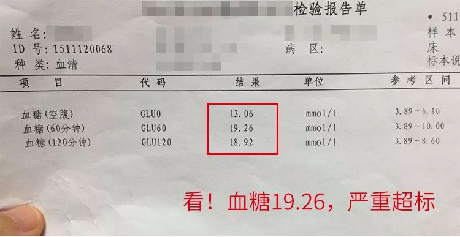
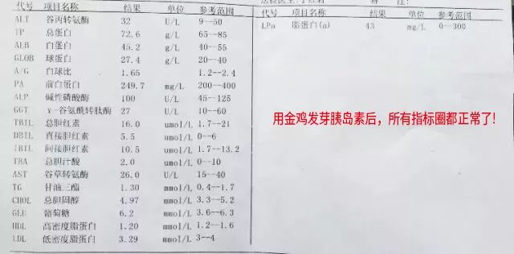
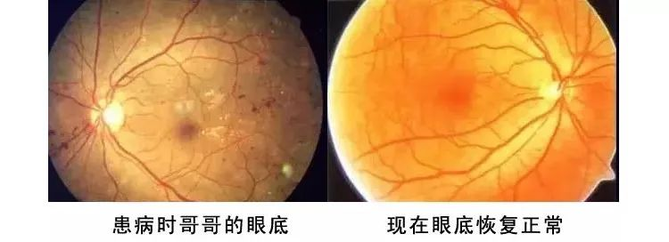
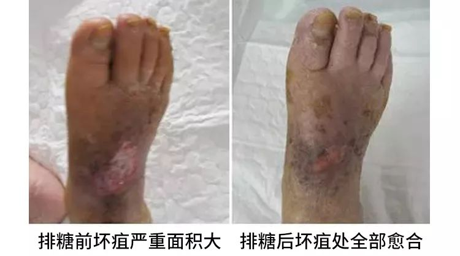
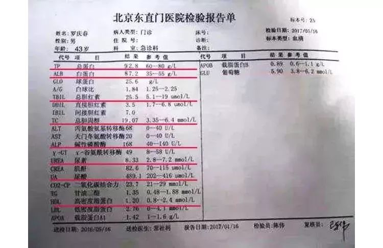

血糖高的原因在这里！掌握此法，让你的血糖快速下降又持续稳定！
最近，糖友圈发生了一件神奇的事，红墙国医胡维勤把300年的葛洪®糖安化糖老方和现代最高科技的发芽胰岛素干细胞植入技术结合到了一起。这种技术就像在糖尿病患者的胰岛中种了一颗胰岛素的种子，只要胰岛没有摘除，没有坏死，它会在胰岛当中生根发芽，源源不断的分泌胰岛素，来替代那些坏死的胰岛细胞。这事一发生就遭到数百万糖友疯狂转发。据说花不了几个钱，但发芽胰岛素降糖效果出奇的好，而且还是由知名药企金鸡药业研发生产，只要用上它，血糖再不高，并发症全消，吃喝不受限，老糖人变成正常人。只花5分钟，看完一生受用！
（添加老师微信，领取糖尿病发芽胰岛素疗法治疗方案）
【长按识别下方二维码】
每日限50人 免费咨询
真传一句话，假传万卷书。我是一位干了30年内分泌科的地道西医，却对自己的糖尿病，束手无策。
吃过各类降糖西药，打过胰岛素，可血糖仍象脱缰的野马，高居不下。更可怕的是，忍饥挨饿，面黄肌瘦，浑身瘙痒，视力模糊，肝肾功能越来越差，真怕哪天变成尿毒症！
最后，还是咱中医“祖传”老方救了我的命，让我摆脱糖尿病及并发症的纠缠！为了让更多的糖友，能像我一样重获健康，我决定公布这个神奇的老方！
我叫王福顺，在市医院内分泌科工作30年。在患病之前，我也遇到过成千上万的糖尿病患者，虽然竭尽全力，给每一位患者精心选择降糖药，调整胰岛素剂量，可往往结果还是血糖不断反弹，并发症越来越严重。日积月累，我逐渐对这些胰岛素、降糖药也产生了怀疑。
我属于家族遗传性糖尿病，我父亲就因糖尿病诱发脑血栓去世，我大哥糖尿病导致双眼接近失明，肾功能衰竭，卧病在床近10年。
从二甲双胍、优降糖、美吡达，到卡司平、倍欣……每一代降糖药，我都率先使用，可血糖仍像坐电梯，降得快，弹得更快，走路就像踩棉花，头重脚轻，尿频嘴干，眼前起雾看不清东西，去年我还出现几次心衰，脚肿得鞋都穿不上！

多亏在北京医院工作的老同学，告诉我金鸡药业有一个神奇的发芽胰岛素疗法。据老同学讲，这个发芽胰岛素疗法在各大医院做临床，遗传性糖尿病、肥胖型糖尿病、药物性糖尿病，还有眼底、足底、心脑、肝肾出现并发症者100个人里头，有98个人全面变好。
我吃上当天，明显感到嘴不干了，排尿少了，浑身有劲。吃到三四天，血糖就稳定在餐前5.0餐后7.0，眼前不起雾，看报纸不费劲，连吃三个疗程后，血糖稳定再没高，肝肾指标也正常了，原来增大的左心室，康复如初！

我大哥用金鸡药业的发芽胰岛素疗法效果比我还明显，蛋白尿消失了，接近失明的双眼也能看清东西了，如今他不再依赖胰岛素，能吃能喝，气色红润，不仅血糖一点没反弹， 而且从头到脚的并发症，也一天比一天少！我俩聚一起常感叹：要是发芽胰岛素疗法再早知道几年，老爸也不会因糖尿病丢了性命！

（添加老师微信，领取糖尿病发芽胰岛素疗法治疗方案）
【长按识别下方二维码】
每日限50人 免费咨询
因本人全家、亲朋好友，皆受益于发芽胰岛素疗法。为此。我对它产生了浓厚兴趣，并进行了深入讲究，这才发现：
它还真不是普通的民间偏方，比西方的胰岛素还早几百年，收录于明崇祯十年（1637年）的《皇家进药底薄》第36卷。化糖老方，过去专门为达官显贵，皇亲国戚治消渴顽疾。
给皇亲国戚治病可不能马虎，如果治不好不但自己要掉脑袋，还要株连九族。葛洪®糖安化糖老方之所以见效快、治疗彻底，全因它配方独特，治法新奇。
老祖宗留下来的经验：治疗糖尿病药材必须好，药量必须足，葛洪®化糖老方中个顶个都是名贵好药：
猪胰、黄芪、山药、苦瓜干、南瓜干
这300年葛洪®糖安化糖老方高科技升华金鸡药业发芽胰岛素疗法，益气养阴、温阳活血，能有效消化转移多余血糖为能量，快速激活胰岛干细胞，从而消除高血糖，消除并发症，被医学专家，形象的称为天然口服发芽胰岛素，并经现代制药技术，改良浓缩后更容易被人体吸收，为此国家列为OTC准字号国药保护，全国独一个，绝没第二。
（添加老师微信，领取糖尿病发芽胰岛素疗法治疗方案）
【长按识别下方二维码】
每日限50人 免费咨询
花5分钟认真读懂它
现在人们生活好了，每天大鱼大肉，举个例子：
胰岛每天只能分解一块肉，你却吃进去5块肉，久而久之胰岛累坏了，必然罢工。而我们吃降糖药也好，打胰岛素也好，都是把糖当成“垃圾”仍掉了，细胞长期得不到营养，处于“饥饿”状态，必然失去生理功能，由于更多的胰岛细胞受损凋亡，导致身体机能和组织器官逐渐丧失功能，出现可怕的并发症。
我们把血糖比作弹簧，降糖药、胰岛素就像按在弹簧上的手，手按下去，血糖就能得到控制，手一放，血糖就会再弹起来。弹簧压得越低，反弹也就越高，久而久，弹簧必定失去弹性。人身体也一样，如果血糖忽高忽低，肯定会导致肝脏、肾脏、胰脏功能衰退……让糖尿病一辈子牵着鼻子走。
中医认为：疾病既然有它的来路，就一定有送走它的去路。糖尿病“病在胰岛、症在五脏、根在细胞”，中医治疗上“以胰治胰，以胰补胰”，方可达到清热消渴，目的就是改变高血糖体质，消化血糖为能量才是根本出路。
国医大师和金鸡药业告诉你：糖尿病能彻底治好！金鸡药业研发的这个糖尿病治疗技术最神奇之处就在于将300年前葛洪®糖安化糖老方结合高科技提炼出的“发芽胰岛素”干细胞种植疗法，这发芽胰岛素是一种胰岛干细胞，它会在胰岛当中生根发芽，来替代死亡的胰岛及脏腑细胞，源源不断的分泌胰岛素，恢复人体胰岛器官的用糖能力，同时还可以激活那些休眠的惰性的胰岛细胞再次工作，让它成为多余血糖的搬运工，吃进多少糖，它就能消化转移多少糖。这样不仅血糖平稳了，五脏器官细胞能够正常消耗利用摄入的糖分，血糖就会自主下降至正常，糖尿病自就好了，逐渐摆脱服用降糖药的恶性循环，五脏六腑的细胞也有营养了，并发症也就从头到脚全都消失了，以后血糖想高也高不起来。
（添加老师微信，领取糖尿病发芽胰岛素疗法治疗方案）
【长按识别下方二维码】
每日限50人 免费咨询
发芽胰岛素干细胞种植到胰岛后，会分裂出数以万计的胰岛活细胞，这些活细胞靶向渗入到常年积累在细胞上的糖毒，由内而外的一层一层的排下来，细胞上没有了大量糖毒的附着和侵蚀，细胞恢复正常活性，代谢功能也随之恢复。
因为发芽胰岛素是一种干细胞，它具有自我复制能力、自我更新产生更多的干细胞，从而再生各种组织器官的细胞。身体的细胞长时间的处于这种高血糖的环境当中，造成的脏腑组织细胞大量死亡，最终导致脏腑功能衰竭而出现各种并发症。这个干细胞可以把自身分化为受损的脏腑细胞，来替代死亡的脏腑细胞，保证您的脏腑细胞的活性和数量。再生受糖尿病并发症损伤的人体的脏腑组织细胞，恢复脏腑细胞转化糖分的功能，这样也就达到了糖尿病和并发症同时治疗的功能了。
干细胞在人体当中分化复制的速度是非常快的，而且这个过程非常短，更多的胰岛干细胞将原有细胞上排出的糖毒、垃圾通过分解酶消化掉，并排出体外。像血糖波动不稳定的、皮肤瘙痒、视力模糊、小便次数增加的这样的患者，发芽胰岛素用上两到三天就见效，有的患者糖尿病都十几年、二十几年了，心、脑、眼、肾、神经等等并发症都出现了，结果怎么样？几天的时间这些症状都缓解，都消失。
金鸡药业对现代化高科技提纯工艺的信任和针对中药的原材料的信任。最主要的发芽胰岛素是从什么地方提取出来的？它是在藏香猪的胰岛当中提取出来的，藏香猪的胰岛细胞和人体胰岛器官细胞匹配度高达99%，野生藏香猪吃的是冬虫夏草、雪莲红花，饮的是天山雪水，被誉为“山神的馈赠”。而且是经过繁琐的工艺高科技的提取之后，才能够从十头藏香猪的胰岛当中提炼出这一粒发芽胰岛素。如果说浓缩的是精华，那可以说发芽胰岛素那就是精华当中的精华！而且，发芽胰岛素当中用到的所有中药材，都是采自于广西十万大山当中的名贵中草药材，这也是为什么，胡老把三百年的老方和在国外多年的研究成果，交给了广西金鸡药业生产的原因。
葛洪®糖安化糖老方-发芽胰岛素进入血液，消血糖、扫垃圾；进入脏腑，排毒素，清内脂……所到之处将糖毒统统都带走，消糖稳糖的同时改善自身糖代谢能力，即能稳降血糖，又能养五脏细胞，还能降脂降压。为此，医学界称它为“治糖之王”，更是“调养之王”！
（添加老师微信，领取糖尿病发芽胰岛素疗法治疗方案）
【长按识别下方二维码】
每日限50人 免费咨询
黑龙江农民孙贵田，糖尿病8年，吃遍各种降糖西药，可是这血糖还是忽高忽低，一直治不好，更引发了脚面坏疽，不但什么活都干不了，还面临截肢隐患。
要不是及时用上金鸡药业的发芽胰岛素，老孙的脚可能早就不保了。原来血糖18.5mmol/L,血压180/110mmHg，服用1周后，血糖控制在6.3
mmol/L，血压稳定在120/90mmH，晨起盗汗，失眠严重，夜尿多，经常头晕头痛明显减轻。
用发芽胰岛素3疗程，不仅烂了一年的脚，肉全长好了，更从此摆脱了降糖西药对全身的毒害。

服用金鸡药业的发芽胰岛素，白天益气消糖，晚上营养细胞，治养防三效合一，不出三个疗程，让老糖人实现“汤、糖、躺、烫、”四大康复金指标：
汤，指饮食的改变，很多糖友怕吃饭吃多了血糖高，只能喝汤喝个水饱，用金鸡药业的发芽胰岛素疗法，你就可以像健康人一样，顿顿能饱餐，再不用担心血糖再升高。
糖，指血糖的改变，金鸡药业的发芽胰岛素疗法当天消糖，3天稳糖，空腹血糖值，稳稳控制在6.0以下，让你再无后顾之忧。
躺，指精神的改变，糖尿病人身子没劲，总想躺着。那是因为血糖没被吸收，都被排走了，金鸡药业的发芽胰岛素疗法消化血糖为能量，自然浑身有劲。
烫，指并发症的改变，糖尿病人的脚，麻木迟纯，不小心很容易烫伤，引起感染坏疽，甚至截肢！化糖老方，不仅能消化血糖，更能滋养神经，恢复手脚神经敏感度，调节内分泌循环，并发症越来越少，身体越来越好。
（添加老师微信，领取糖尿病发芽胰岛素疗法治疗方案）
【长按识别下方二维码】
每日限50人 免费咨询
天津河东区退休干部杨新发，糖尿病15年，天天小米饭，一两多，吃不饱也得受着。夏天，瞅着人家吃西瓜，自己只能干咂嘴，吃不敢吃，喝不能喝，做点儿家务事，上公园溜溜弯儿，都受限制，活动大发点，就上气不接下气，累得直冒虚汗，心跳特别历害。
老杨以前光知道吃降糖西药，打胰岛素来治糖尿病，可打针吃药不见好，自从用了金鸡药业的发芽胰岛素疗法，才五六天，头不晕了，胸也不闷，睡觉特别香。
一个疗程，他就减服一半降糖西药，血糖仍然稳定在6.0，手脚也不麻木了，身上也有劲了。坚持吃了3个疗程后，他就再也不依赖降糖药了，血糖还是正常范围，血压血脂再没高。现在他，吃喝玩乐样样行，彻底摆脱糖人称号！
如果您在糖尿病治疗中出现以下情况，请抓紧用金鸡药业的发芽胰岛素疗法：
1.
普通降糖药难以控制病情：说明血液中无法消除转化的糖已经很多，胰岛损伤很严重，同时出现视力模糊，皮肤搔痒，手指尖麻木，伤口不愈合等症状，应及时用金鸡药业的发芽胰岛素疗法。
2.
长期吃降糖药，肝肾功能出现损坏：金鸡药业的发芽胰岛素疗法，不但能消化血糖，再生胰岛细胞，同时还能排出血液和肝肾等脏器中，多年沉积的药毒，调理内环境，消除并发症。
3. 刚检查出糖尿病：临床上医生不主张吃降糖西药，轻度糖尿病患者，可直接用金鸡药业的发芽胰岛素疗法。
4. 用降糖西药物产生抗药性，药越吃越不管用：如果再不用金鸡药业的发芽胰岛素疗法，消化多余血糖，激活胰岛细胞，将无药可救！
（添加老师微信，领取糖尿病发芽胰岛素疗法治疗方案）
【长按识别下方二维码】
每日限50人 免费咨询
北京海淀区43岁罗大哥，自从得上糖尿病，每天吃降糖药比吃饭还准时，二甲双胍配合瑞格列奈，血糖控制一直也很稳定。可万万没想，年初体检结果一出来，吓出他一身冷汗。

虽然血糖值没再高，可血压、血脂、心率、尿蛋白，各项指标都超标。难怪他最近，总是感觉浑身无力出虚汗，腿脚发麻，心慌失眠，小便味大总尿急。
以前他觉得人到中年，谁还没点小毛病。可听大夫说，养病如养虎，10个糖尿病9个死于并发症，所以控制糖尿病并发症比控制血糖更重要。
自从用上金鸡药业的发芽胰岛素疗法，罗大哥明显感到，头不晕了，眼不花了，手脚不再麻，尿频尿急消失了，浑身有劲，睡眠好。三个疗程后，血糖、血脂、血压、心率、尿蛋白等指标全都回归了正常值，身体一天比一天好！
家住西安市小寨西路的47岁李海霞，糖尿病、高血压多年。每天吃降压药、打胰岛素，仍头晕胸闷，视力模糊，手脚麻木。有一次晕突发脑梗，差点丢了命，住院时听病友说，每天打针吃药，时间久了一样还会中风偏瘫患心梗。
没想到服用金鸡药业的发芽胰岛素疗法6天，血糖血压平稳降到正常值，连续服用了一个月，胰岛素、降压药统统不用了，再去医院体检，血糖5.5 mmol/L。血压130/80 mmH，胰岛功能正常，心脑血栓全部消除。

金鸡药业发芽胰岛素疗法，不仅消化血糖为能量，让血糖回归正常值，不再增高，而且坚持用上3疗程以上，身体还可以发生3大变化：
第一：小便变味，浑身有劲：消化血糖的能力增强了，小便中流失的营养没有了，所以尿液变清了，泡沫消了，骚味没了，浑身有劲。
第二：三多少一，再也不找。血糖、尿糖全面稳定，饥饿感、眼干涩、口干口渴、夜尿多、肢体麻木等症状彻底消失。
第三：并发症全消，吃喝不受限。胰岛细胞活力增加，五脏功能逐渐正常，糖尿病引发的眼病、肾病、脑病、心脏病、坏疽，皮肤病、生理障碍等7大病症相继消失，糖尿病人停针停药，能吃能喝，恢复健康生活。
相信大多数糖友，一说到降糖，都有一堆失败的经验和苦水。但这次，大家千万别把金鸡药业的发芽胰岛素疗法和那些没名没姓，小作坊制造，没有正规批号、甚至添加违禁成份的降糖产品相提并论。
论出身：金鸡药业的发芽胰岛素疗法，系出名门，系全国百强药企，金鸡药业中华老字号，全国独一个，绝没第二个。
论口碑：金鸡药业的发芽胰岛素疗法，问世以来，深受广大糖友信赖，备受称赞和追捧，受益人群与日俱增。
论品质：金鸡药业的发芽胰岛素疗法，坚持配方独特，选料上乘，工艺精湛，疗效显著之特色，严把质量观，视品质为生命，视责任重于泰山，一百道工序，给您一百个放心。
金鸡药业发芽胰岛素疗法适合
（一） 遗传型糖尿病：主要由先天遗传代谢缓慢，造成先天性高血糖症
（二） 肥胖型糖尿病：不规律的饮食习惯诱发的，往往伴有高脂血症、脂肪肝、高血压、 冠心病、高尿酸症等。
（三） 糖尿病视网膜病变：出现不同程度视力下降，并伴有眼底视网膜病变。
（四） 糖尿病肾病：出现浮肿，尿中泡沫增多，蛋白尿，肾衰等病症。
（五）
糖尿病神经病变：四肢皮肤感觉异常，麻木、针刺、蚁走感。足底踩棉花感，腹泻和便秘交替，尿潴留，半身出汗或时有大汗，性功能障碍。
（六） 糖尿病反复感染：皮肤感染，疖、痈，泌尿系感染，女性外阴瘙痒。
（七） 糖尿病病足坏疽：经久不愈的小腿和足部溃疡。
（添加老师微信，领取糖尿病发芽胰岛素疗法治疗方案）
【长按识别下方二维码】
每日限50人 免费咨询
 点击添加老师微信！
点击添加老师微信！